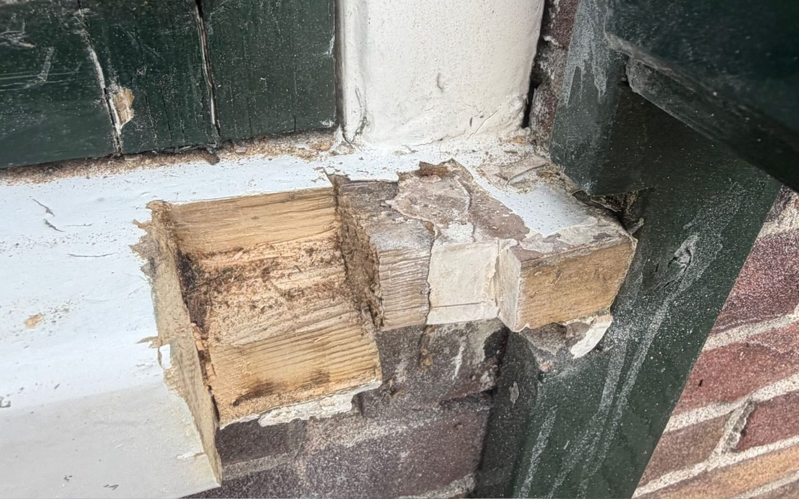
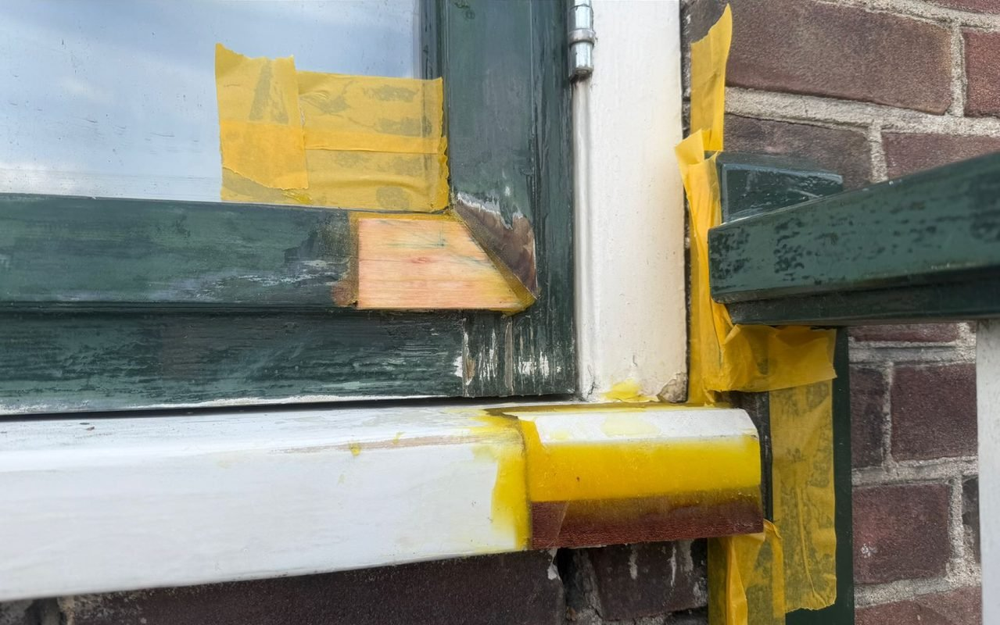
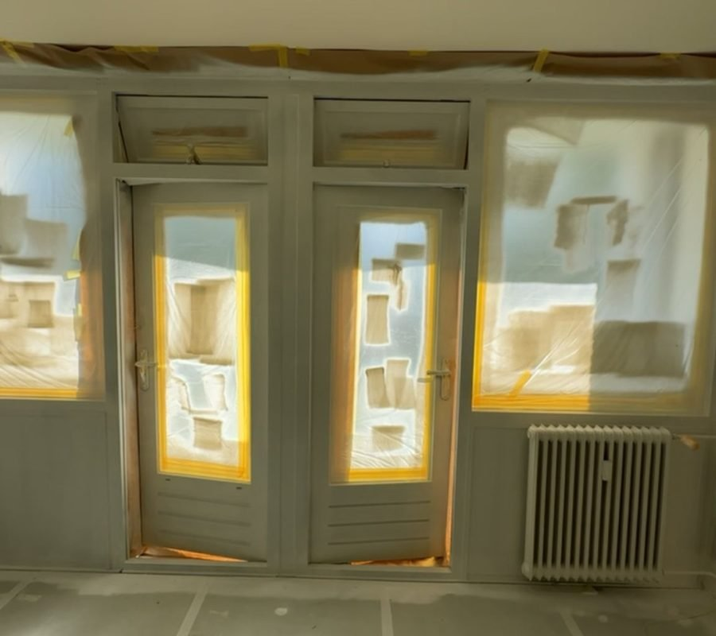
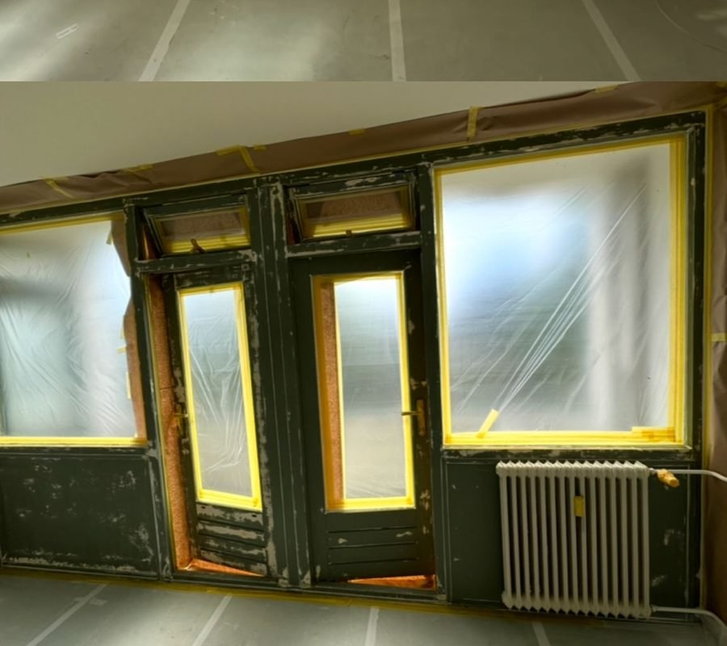
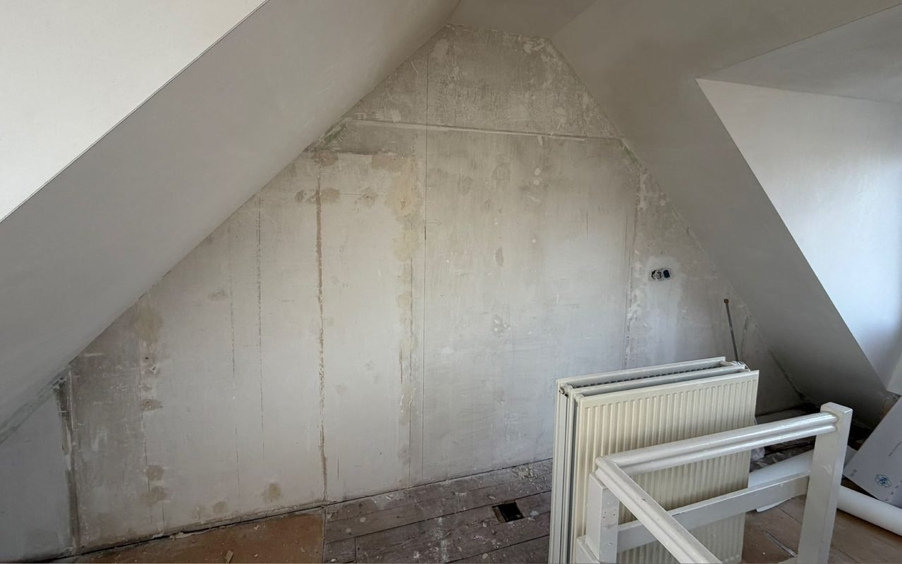
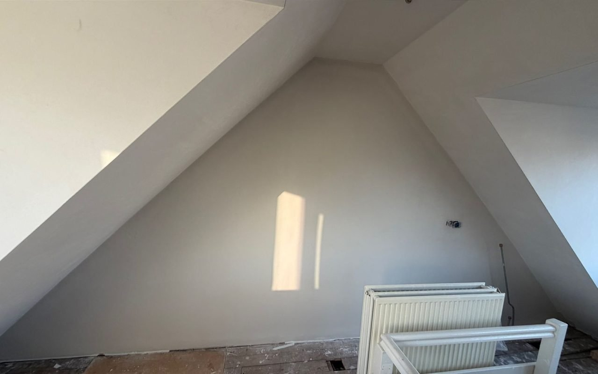

Binnenwerk
Een frisse uitstraling in huis begint met goed voorbereid schilderwerk. Ik verzorg binnenschilderwerk aan onder andere wanden, plafonds, deuren, kozijnen en ander houtwerk.
Voor een strak resultaat besteed ik veel aandacht aan de voorbereiding. Beschadigingen worden waar nodig hersteld, oppervlakken worden goed voorbereid en pas daarna wordt het schilderwerk aangebracht.
Buitenwerk
Goed buitenschilderwerk is niet alleen belangrijk voor de uitstraling van uw woning, maar ook voor de bescherming van het houtwerk.
Kozijnen, deuren, ramen en ander buitenschilderwerk krijgen dagelijks te maken met regen, wind en zon. Een goed verfsysteem en een zorgvuldige voorbereiding helpen om het schilderwerk langer mooi en beschermd te houden. Ik beoordeel eerst de staat van het bestaande schilderwerk en bespreek wat er nodig is voordat ik aan de slag ga.

Voor
NaHerstel
Houtrot kan ervoor zorgen dat kozijnen, ramen of ander houtwerk steeds verder worden aangetast. Daarom is het belangrijk om houtrot op tijd aan te pakken.
Waar mogelijk herstel ik het aangetaste hout vakkundig, zodat het onderdeel weer netjes kan worden afgewerkt en beschermd. Ik kijk daarbij niet alleen naar het zichtbare probleem, maar ook naar de oorzaak en de staat van het omliggende schilderwerk.
Spuitwerk
Wilt u een echt strak en modern resultaat? Met lak- en latexspuitwerk kan ik verschillende oppervlakken mooi en egaal afwerken.
Denk bijvoorbeeld aan deuren, kozijnen, wanden, plafonds en ander houtwerk. Ik bespreek vooraf de mogelijkheden en zorg voor een goede voorbereiding en een nette afwerking.

Voor
NaWandafwerking
Een ruimte opnieuw aankleden met behang vraagt om een goede voorbereiding en nauwkeurige afwerking.
Ik verzorg het behangwerk van voorbereiding tot het aanbrengen van de laatste baan. Daarbij staat een strak en netjes eindresultaat centraal.
Wandafwerking
Renovlies is glasvezelbehang dat over de wand wordt aangebracht en daarna gewoon gesausd wordt. Het overbrugt haarscheurtjes en kleine oneffenheden en geeft een strak, egaal vlak.
Vooral in oudere woningen waar scheurtjes steeds terugkomen is dit vaak een duurzame oplossing.

Voor
NaNeem gerust contact op, ik denk graag met u mee.
Vrijblijvende offerte aanvragen